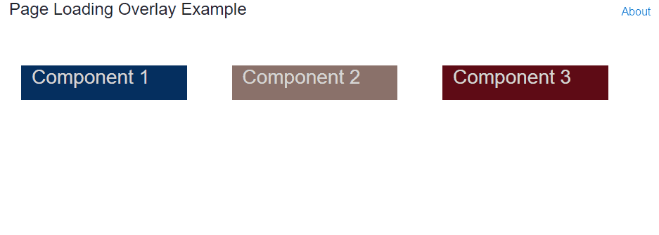
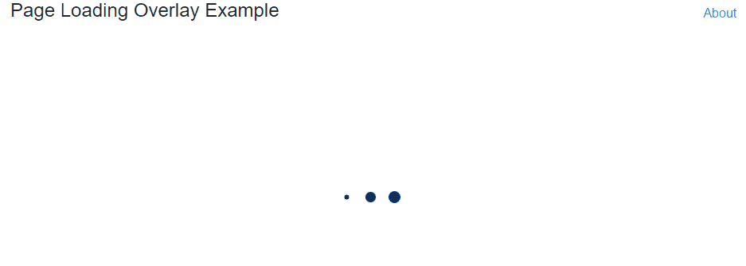

Creating a Loading Overlay for a Composite Blazor View
One of my projects’ home screen is composed of multiple Blazor components that make a web service calls in their respective OnInitAsync()s to retrieve their data. When loading the page, all of the components render immediately in their unpopulated state; each one then updates and fills out as the various web service calls complete and their data loads. I’m not a fan of this – I’d rather have a nice overlay with some sort of loading indicator hiding the components while they’re loading that disappears when the last component is ready for display. This weekend I developed a simple pattern for accomplishing just that.
The full source code for this example can be found here.
What We’re Building
Below is an example of a Blazor page that contains three components, each one simulating a web service call on initialization that completes from one to three seconds after it is initialized. We see them show up empty at first, then resize, and finally load their text, all at different times.
Blazor page load without loading overlay.
Instead, we want our end product to look like the following. When the page loads we see a nice little loading indicator (I pulled a free one from here) on an overlay that hides the components while they’re doing their business of intializing, resizing, and loading their data before they’re ready to be seen.
Blazor page load with loading overlay.
Now that we know what we’re building, let’s see some code…
Blazor Components
Index View and Model
We’ll start with our Blazor components. Our IndexView.cshtml is the main page, and it looks like this:
@inherits PageLoadingOverlay.App.Features.Home.IndexModel
@page "/"
@layout Layout.MainLayout
<!-- Loading overlay that displays until all individual components have loaded their data -->
<LoadingOverlayView LoadStateManager="@LoadStateManager"></LoadingOverlayView>
<div class="row">
<div class="col-3 component-div component-1-div">
<ComponentView LoadStateManager="@LoadStateManager" Number="1" Delay="2000"></ComponentView>
</div>
<div class="col-3 component-div component-2-div">
<ComponentView LoadStateManager="@LoadStateManager" Number="2" Delay="1000"></ComponentView>
</div>
<div class="col-3 component-div component-3-div">
<ComponentView LoadStateManager="@LoadStateManager" Number="3" Delay="3000"></ComponentView>
</div>
</div>
Note that we have four components in this view: three instances of ComponentView that load data on initialization, and an instance of LoadingOverlayView that hides the other components until they are all loaded. We’ll look at these components shortly.
The corresponding IndexModel for this view has a single property:
public class IndexModel: BlazorComponent
{
/// <summary>
/// The <see cref="LoadStateManager"/> for this view
/// </summary>
/// <remarks>
/// Since this is the parent view that contains the loading overlay, we new
/// up an instance of the <see cref="LoadStateManager"/> here, and pass it
/// to child components.
/// </remarks>
public LoadStateManager LoadStateManager { get; } = new LoadStateManager();
}
We instantiate a new instance of LoadStateManager here, which will manage the loading state of the child components and tell the loading overlay when all components are loaded and it can disappear.
Component View and Model
The three instances of the component that we’re loading have these properties:
public class ComponentModel: BlazorComponent, ILoadableComponent
{
[Parameter] protected LoadStateManager LoadStateManager { get; set; }
[Parameter] protected int Number { get; set; }
[Parameter] protected int Delay { get; set; }
public string Title => $"Component {Number}";
public string Status { get; private set; }
public ComponentLoadState LoadState { get; } = new ComponentLoadState();
The LoadStateManager from the parent view is passed to the component, as well as a couple of other parameters (like Number and Delay) that control the component’s behavior.
The component implements interface ILoadableComponent which defines a single property:
/// <summary>
/// Defines a component whose <see cref="ComponentLoadState"/> can be managed by a <see cref="LoadStateManager"/>
/// </summary>
public interface ILoadableComponent
{
/// <summary>
/// The load state of a component
/// </summary>
ComponentLoadState LoadState { get; }
}
Note that when we implement ILoadableComponent in our component, we go ahead and instantiate a new instance of ComponentLoadState to manage the loading state of this individual component.
Back to our ComponentModel, we want to register our component with the LoadStateManager when its parameters are set, like so:
protected override void OnParametersSet()
{
base.OnParametersSet();
// Register this component with the LoadStateManager
LoadStateManager.Register(this);
}
This call makes the LoadStateManager aware of this component and ensures that it will wait for this component to finish loading before alerts the parent view that all child components are done loading.
Finally, we have our good friend, OnInitAsync() which simulates a web service call with a Task.Delay(Delay), sets our Status, and finishes up with by telling the component’s LoadState that we’re done loading:
protected override async Task OnInitAsync()
{
// Simulate a web service call to get data
await Task.Delay(Delay);
Status = StringConstants.RandomText;
// Ok - we're done loading. Notify the LoadStateManager!
LoadState.OnLoadingComplete();
}
Loading Overlay View and Model
The final view is the LoadingOverlayView:
@inherits LoadingOverlayModel
@if (!LoadStateManager.IsLoadingComplete)
{
<div class="loading-overlay">
<div class="loader-container">
<div class="dot-loader"></div>
<div class="dot-loader"></div>
<div class="dot-loader"></div>
</div>
</div>
}
This is essentially a div that covers the main content area with a simple CSS loading animation in the middle that is displayed as long as LoadStateManager.IsLoadingComplete is false. (The CSS for this overlay is not my main focus for this post, but it can be found towards the bottom of the standard site.css that was created for my new project here for those interested.) This is the same LoadStateManager that is instantiated in the IndexModel and passed to the child components.
Here’s the corresponding model:
/// <summary>
/// Model class for <see cref="LoadingOverlayView"/>
/// </summary>
public class LoadingOverlayModel: BlazorComponent
{
/// <summary>
/// The <see cref="LoadStateManager"/> for this <see cref="LoadingOverlayModel"/>
/// </summary>
[Parameter] protected LoadStateManager LoadStateManager { get; set; }
protected override async Task OnInitAsync()
{
// When LoadStateManager indicates that all components are loaded, notify
// this component of the state change
LoadStateManager.LoadingComplete += (sender, args) => StateHasChanged();
await Task.CompletedTask;
}
}
In this model, we subscribe to the LoadStateManager.LoadingComplete event, which will fire when all of the components that the LoadStateManager is monitoring have completed loading. When the event fires, we simply need to call StateHasChanged() to alert the component to update itself. since it is bound directly to LoadStateManager.IsLoadingComplete.
Helper Classes
LoadStateManager
As we’ve already mentioned, LoadStateManager manages the load state of a collection of components on a screen. Components register themselves with the LoadStateManager. The LoadStateManager keeps a collection of their ComponentLoadStates and subscribes to each one’s LoadingComplete event, triggering the LoadingComplete event when the last one completes:
/// <summary>
/// Manages the <see cref="ComponentLoadState"/>s for a particular view
/// </summary>
public class LoadStateManager
{
private readonly ICollection<ComponentLoadState> _componentLoadStates = new List<ComponentLoadState>();
/// <summary>
/// Gets a value indicating whether all registered components are loaded
/// </summary>
public bool IsLoadingComplete => _componentLoadStates.All(c => c.IsLoaded);
/// <summary>
/// Registers an <see cref="ILoadableComponent"/> with this <see cref="LoadStateManager"/>
/// </summary>
/// <param name="component"></param>
public void Register(ILoadableComponent component)
{
_componentLoadStates.Add(component.LoadState);
component.LoadState.LoadingComplete += (sender, args) =>
{
if (IsLoadingComplete) OnLoadingComplete();
};
}
/// <summary>
/// Notifies subscribers that all loading is complete for all registered components
/// </summary>
public event EventHandler LoadingComplete;
protected void OnLoadingComplete()
{
LoadingComplete?.Invoke(this, new EventArgs());
}
}
ComponentLoadState
Finally we have ComponentLoadState, which represents the load state of an individual component. It exposes an IsLoaded property, a LoadingComplete event, and an OnLoadingComplete() method for storing and communicating the component’s load state:
/// <summary>
/// Represents the load state of an individual component
/// </summary>
public class ComponentLoadState
{
/// <summary>
/// Gets a value indicating whether this component is loaded
/// </summary>
public bool IsLoaded { get; private set; }
/// <summary>
/// Notifies the <see cref="LoadStateManager"/> that this component has completed loading
/// </summary>
public event EventHandler LoadingComplete;
/// <summary>
/// Invoked by the corresponding component to indicate that it has completed loading
/// </summary>
public void OnLoadingComplete()
{
IsLoaded = true;
LoadingComplete?.Invoke(this, new EventArgs());
}
}
Putting It All Together
Once you have your helper classes and overlay view and spinner created, it’s fairly trivial to add this functionality to a Blazor page. The page view just needs to instantiate the LoadStateManager and pass it to its children, and the child components need to define properties for the LoadStateManager and ComponentLoadState, register with the LoadStateManager, and tell their ComponentLoadState when they’re done loading.
I hope you’ve found this post helpful. You can find the full source code for this sample here. Thanks for reading!
–Jon